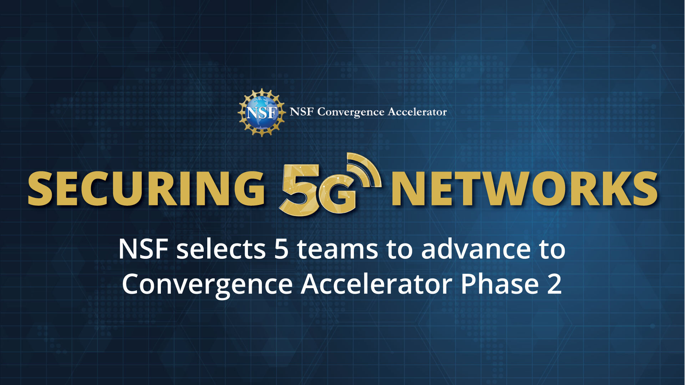

Taejoon Kim (김태준)
[CV, GS]
Associate Professor
School of Electrical, Computer
and Energy Engineering
Ira A. Fulton School of Engineering
Arizona State University
Office: 352 Goldwater Center
Email: taejoonkim@asu.edu
News
- Sep 2024: I received the Faculty of the Year Award, presented by the Kansas Board of Regents (KBOR).
- August 2024: I joined the School of Electrical, Computer and Energy Engineering at Arizoan State University as an associate professor.
- (Media Coverage) Nov 2023: KU Today, ASEE, and SPACE WAR are covering our research!
- Sep 2023: I am honored to be the Lead PI of the Zero Trust X (ZTX) team funded by the NSF Convergence Accelerator Track G Phase 2 Program: Combating Vulnerability and Unawareness in 5G Network Security: 
- May 2023: I received the Miller Professional Award for Research, presented by the Dean of KU Engineering (2023 Award Ceremony).
- May 2023: Our paper on "Robust Non-Linear Feedback Coding via Power-Constrained Deep Learning", was accepted to ICML. Congrats Junghoon for the excellent work!
- <Alumni> March 2023: My former Ph.D. student Wei Zhang has accepted a faculty position at Harbin Institute of Technology Shenzhen. Congrats Wei!
- (Media Coverage) Sep 2022: KU Today is covering our research!
- August 2022: Awarded NSF CNS Small on Towards Scalable and Al-based Solutions for Beyond-5G Radio Access Networks. I am the Lead PI
- August 2022: Awarded NSF CNS Medium on Communication-Computation Co-Design for Rural Connectivity and Intelligence under Nonuniformity: Modeling, Analysis, and Implementation. I am the lead PI.

My research group do research at the intersection of Wireless Communications, Statistical Signal Processing, and Optimization. There are numerous applications of my research in information theory, data fusion, security, spectrum intelligence, machine learning, and data science.
I received my Ph.D. degree from Purdue University in Electrical and Computer Engineering. I was a recipient of the best paper award of IEEE Transactions on Communications (IEEE Communication Society Stephen O. Rice Prize 2016). I received KU School of Engineering Miller Professional Award for Research (2023), Miller Faculty Awards (both in 2021 and 2022), and Harry Talley Excellence in Teaching Award (2022).
For prospective graduate students: If you want to conduct research in my group, please feel free to send me an email that contains as minimum support (i) your CV, (ii) academic transcripts, and (iii) a review of one of my papers. I read all emails but have difficulty in responding to every email.
Postdocs: One postdoc position focusing on applied Information Theory and Machine Learning for Communications is available. If you are interested, please send me your CV with a complete list of publications.